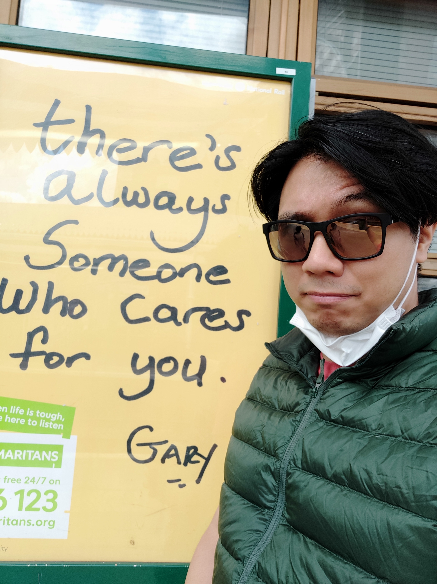

Hi, I'm Ka Lee Gary Wong

I am a QA Architect Lead at Global Logic UK&I, London.
A Little About Me
I graduated with a degree in Computer Games, and since then I have accumulated 20 years of QA knowledge and industry experiences.
I have a big fan of lofi, syncwave, retro gaming.
I will always have a pair of ear buds or headphones on, listening to whichever wuxia or fantasy novel I have at the time.
Like some I never had a goal in life. But my tao seems to be QA related.
My Tao
My Tao is to help create, plan and improve QA processes with a wide set of skills including programming, engineering resourcing, team budgeting and solution design for the team/business in question.
I actively try to help and mentor more junior members within QA to improve and will either sponsor or direct in the right direction. And in turn I learn, grow and traverse my tao.
Contact
| Contact | Me |
|---|---|
| 📧 | mrgarywong@duck.com |
| https://www.linkedin.com/in/ka-lee-gary-wong-13336313 |